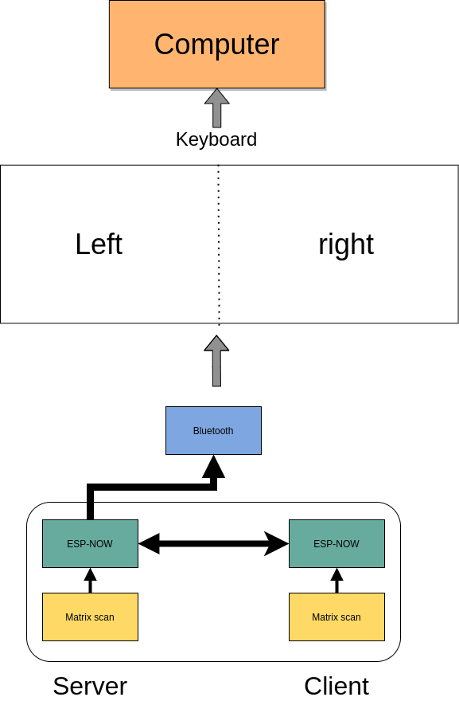
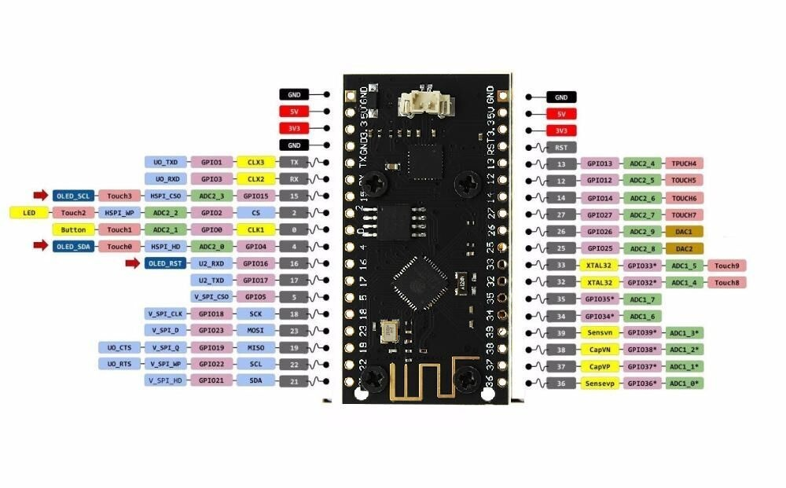
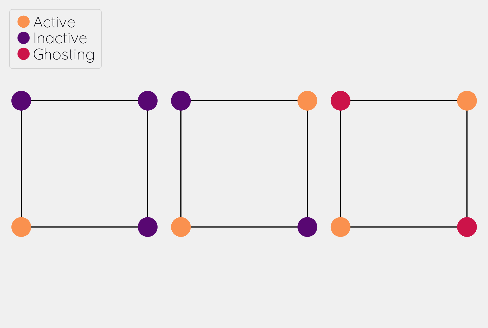

Table of Contents
1 Introduction
Mechanical keyboards are somewhat of a dated concept that has gathered some speed in more recent years. Back when computers were first coming out for the public, keyboards had mechanical connections that would allow a current to activate a switch. Then as economics got wind, somehow we got used to membrane keyboards; virtually every office in the world has these membrane keyboards. Compared to mechanical keyboards, membrane keyboards feel more “mushy”. In contrast, mechanical keyboards may have different feel based on the springs or whether the key switch has a noticeable “bump”. They can be clicky or not; the possibility are wild now.
A few years ago I started following the subreddit on mechanical keyboards. Back then, the community had little options and cherry still had patents on the switches. Cherry MX keys were virtually found in every commercial keyboard on the market. Now, the landscape has changed quite a bit and more and more different types of switches are available.
Why do I prefer mechanical keyboards? Mechanical keyboards give a “joy” to typing. Membrane keyboards are fine to type on, but they aren’t fun. Generally my fingers get “tired” after typing on membrane keyboards as the keys feel a bit mushy, i.e. you get no relief when pushing down a key and the key press does not feel crisp.
After following / r / mechanicalkeyboards for a while, I decided to build my own keyboard. Within the community, there is a wide variety of switches and shapes of keyboards available. The one I wanted, an orthonormal keyboard, wasn’t commercially available. Plus I liked the idea of building my own keyboard. In my work, the keyboard is my primary tool and why not key a custom version of it for myself. I ended up building 2 handwired versions of 65 percent with 85 switches in a grid layout. In addition, I modded a MagSafe-inspired cable to it which allowed it to be nice and portable. After every build I told myself : “ This is the last one I’ll build”.
Enter this blog, where I again tell myself “this is the last one I build!”. What changed? Since I learned about split-style keyboard, I always wanted one. The keyboards I had made so far weren’t. Split would be completely ergonomical, but unfortunately, none (that I know of) exists that are both (a) wireless and (b) split. As always I aimed to high and wanted to emulate the many features that QMK implements. Most importantly, I wanted to get back into writing more low level languages like c++, and I take this project as a nice opportunity to get into c++ again, and work with micro-controllers.
This post will serve as my log for building the keyboard. The post will updated as I work on it.
Core feature targets
- Split wireless keyboard
- Hot swappable key sockets
- Portable, not a full keyboard
- Battery control
- OLED display
- Rotary encoders
2 Outline
The keyboard is split; it has two halves. The right and left half will have most of the same “base” functionality. Most importantly, each half needs to scan the matrix to obtain which keys are being pressed. One of the halves will act as a server, the other will act as a client. The server will need the following capabilities
Server abilities
- Read matrix
- Setup a bluetooth connection
- HID Device
- Mouse emulation
- Setup connection with client
- Merge keys pressed and send to bluetooth controller
- Control LEDs on both client and server
Client abilities
- Read matrix
- Find server and send pressed keys to server
Due to the heavier load of the server, I prefer to make the role of who is server and who is client dynamic. That is, with some heuristic (for example deep sleep), the roles may switch to prolong batter life of both units.
To give a course overview consider the following picture:

3 ESP32
I opted for a micro-controller as this would allow me to prototype without worrying about my electronic skills. The controller needed to have battery control, bluetooth, and preferable an energy efficient screen; I ended up with an esp32.
The esp32 is a hybrid chip that has both Wi-Fi and bluetooth capabilities. The esp32 consists of different versions that varies in (mainly) in the number of pins, battery connector, and or screen. The version I ended with (LORA-V2) had a battery connector and a tiny OLED screen.
The ecosystem of ESP32 is well-developed albeit less convenient than its arduino counterparts. Luckily, the opensource community has taken it upon themselves to provide lots of arduino bindings to the libraries by espressif (manufacturer of esp32).
Especially important (as it turned out later) is that the esp32 has the capabilities of using both Wi-Fi and bluetooth low energy simultanaously. In addition, through ESP-NOW, different eps32 modules can form a mesh, which I will harness to do server-client communication.

Figure 2: Pin-out ESP32 LORA-V2
4 Matrix scanning
A keyboard matrix scanning circuit is used to enhance the number of keys, while keeping the number of pins low. A micro-controller uses general pin input/output (GPIO) to register currents. If a singular key switch is wired to a single pin, 96 pins would be needed for a 104 sized keyboard (full-size). This would be unpractical.
As an alternative one could apply matrix scanning. In this method, the keys are wired as a grid where each column connects to each row effectively forming a “switch”. For a total for 100 keys, one would need 10x10 grid. The grid acts as a force multiplier for the number of switches. Instead of needing 100 separate keys, we merely need 10 rows and 10 columns (20 pins) to wire our 100 switch keyboard.
The matrix is repeatedly scanned to determine if a row column form an open circuit. That is, if a key switch is pressed down, current can flow between the row and column. The scanning occurs at a high scan rate, making it seemingly instantaneous.
4.1 Ghosting
Matrix scanning forms an excellent idea to efficiently represent our electronic switches. However, merely scanning does not correctly records all key presses. Under some conditions, a matrix can record ghost keys, i.e. keys that are registered but not pressed. This process is called ghosting.
Ghosting occurs when current can freely flow between separate rows or columns due to another row/column being open. For example consider a simple two row, two column keyboard. This board can support 4 keys. When two keys along the diagonal are pressed, we register 4 keys(!). This is obviously wrong and needs to be corrected. The most common approach is to put a diode right after the switch either on the columns or rows, which prevents current from traversing and causing ghosting.

Figure 3: Ghosting example. Ghosting occurs when current can flow freely across columns and rows. (Left) one key is pressed down bottom left. (Middle) A key across from the first is activated which causes ghosting (right); current flows from the second row, first column to the second row, second column etc.
4.2 Key debouncing
Key debounce is a mechanism to filter out erroneous key activity. When two metal plates come into contact, the signal does not form a clean square wave. In order to clean up this signal, key debouncing is used to reflect the “press” of key switch.